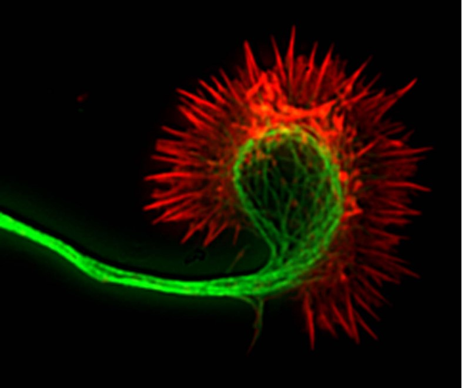
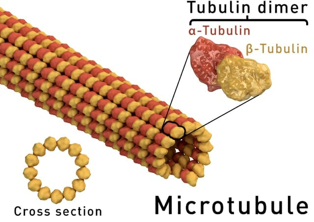
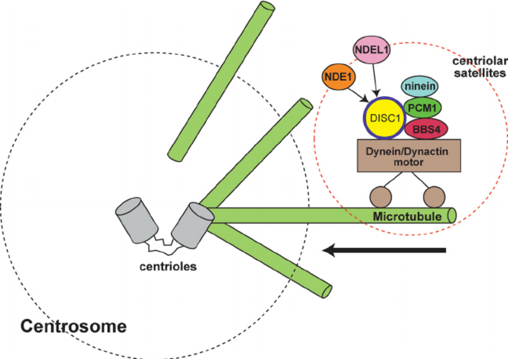
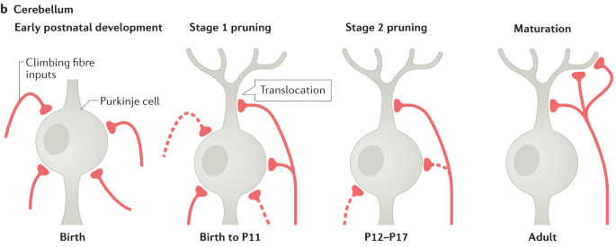
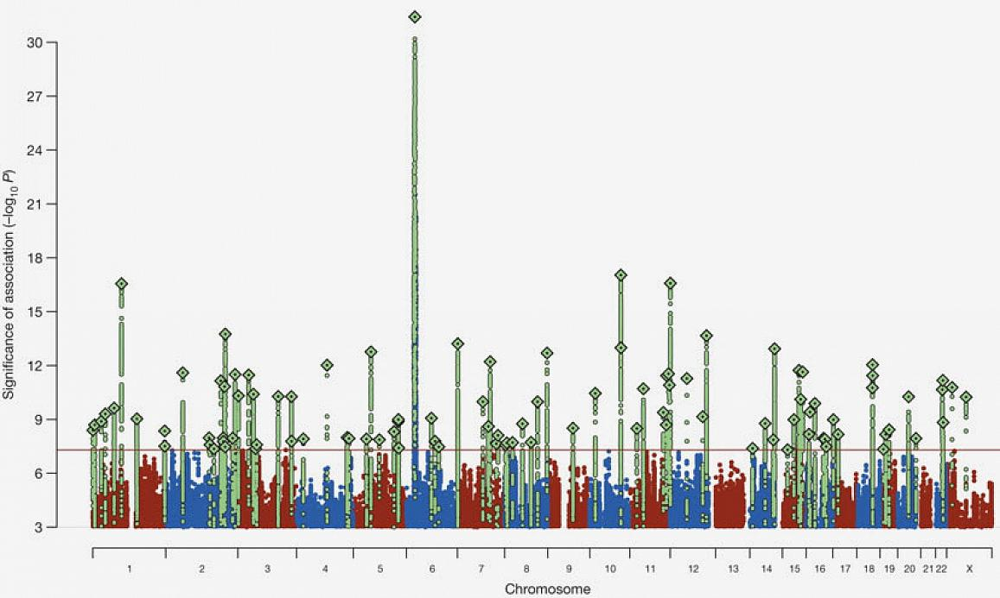

11 신경망의 구조적 변화
11.1 신경망의 리모델링
중추 신경계는 학습과 기억을 통해 얻어진 정보를 장기간 저장할 때는 새로운 신경돌기(neurite)를 자라나게 하거나, 혹은 수상돌기 간극(dendrite spine)의 생성을 유도하여 신경망의 구조적 리모델링을 꾀한다. 발달 과정 중에도 신경망을 성숙시킨다 함은 신경돌기를 생성하고 필요없는 돌기는 솎아내는 과정에 다름아니다. 조현병이 이 과정의 이상때문에 생기는 질환이라면, 신경망을 리모델링하는 구체적 기전에 이상이 있을 것이라 예상하는 것은 자연스러울 것이다. 설령 발달이 끝난 성체의 신경 조직이라도, 학습한 바를 저장하는 신경가소성 과정에 문제가 생긴다면 다양한 정신질환을 촉발할 수 있다.
11.2 신경돌기의 생성
11.2.1 미세소관과 세포뼈대
세포뼈대(cytoskeleton)는 세포의 형태를 지탱하는 구조물을 가리키며, 1) actin으로 된 microfilament, 2) keratin 등으로 만들어진 intermediate filament (혹은 neurofilament), 그리고 3) 미세 소관(microtubule)으로 구성된다. 신경세포가 BDNF1등 외부 자극을 받으면 actin과 미세소관 네트워크가 재조직화되면서 filopodia라는 돌출 부위를 만들어낸다. 평상시 actin은 세포막에 무방향성(non-oriented)으로 분포되어있는데, 자극을 받으면 어느 한 방향으로 뻗어나가기 시작한다. 이후에는 미세소관이 actin이 미리 만들어놓은 경로를 따라 뻗어나가기 시작한다. 미세소관은 말 그대로 세포내 다양한 분자들이 이동하는 통로이며, 미세소관을 통해 공급된 분자들이 돌출부에 모이면서 신경돌기(neurite)가 형성된다.[1]
1 Brain-derived neurotrophic factor (BDNF): 신경세포에 작용하는 성장 인자 중 가장 중요한 물질이다. 중추신경계와 말초신경계 모두에 작용하며, 기존 신경세포의 생존과 성장은 물론 줄기세포가 신경세포로 분화하는 것을 돕는다. 또한 장기 기억을 유지하는데도 결정적인 역할을 한다. 뇌에서 분비되는 다른 성장 인자는 NT-3, NT-4, nerve growth factor (NGF)가 있다.

미세소관은 α- 그리고 β-tubulin의 이량체(dimer)로 구성되는 직경 23 nm 정도의 미세한 관이다. 미세소관은 필요에 따라 생성과 분해를 반복한다. 단세포 생물에서는 섬모를 만들어 운동성을 제공하지만, 다세포 생물에서는 신경돌기를 만들어 신경망 형성 및 세포 이동에 관여한다. 세포의 이동과 관련된 모든 생체 프로세스, 즉 뉴런의 방향성 결정, 발달과정 중의 뉴런 이동, 축삭의 성장, 시냅스 형성 등은 미세소관을 고려하지 않고는 이해할 수 없다.[3]

미세소관은 세포의 모양을 지탱하는 주요 구조이지만, 동시에 분자들을 이동시키는 통로이기 때문에, 어떤 물질을 통과시키고 또 어디로 보낼 지를 결정한다. 이런 역할을 통해 정보전달에도 한 몫 한다는 것이 점차 밝혀지고 있다.[4] 소위 MAP (Microtubule Associated Proteins)이라 불리우는 미세소관 관련 단백질에는 MAP1B, MAP2, Tau 그리고 MAP62등의 구조 단백질과, CRMP3이라고 하는 기능성 단백질이 포함된다. MAP6와 CRMP는 미세소관을 새로 생성할 지, 아니면 제거할 지, 새로 만든다면 어느 방향으로 뻗어나갈 지 등을 결정한다.[5,6]
2 MAP6 (Microtubule-associated protein 6)는 STOP (stable tubule-only polypeptide)이라고도 불리운다. 미세소관을 구성하는 microtubule-associated protein 중 하나로, tubulin과 결합하여 미세소관을 형성한다.
3 CRMP (Collapsin response mediator proteins): 세포질 내에 존재하는 단백질로 발달 과정에 있는 신경세포에서 가장 중요한 인단백질(phosphoprotein) 중 하나이다. CRMP 1,2,3,4,5의 다섯가지 종류가 있다. 주로 신경돌기의 생성, 성장원뿔(growth cone)의 생성과 해체를 담당하며, 미세소관의 합성 속도를 통제한다.)
11.2.2 조현병과 미세소관
소위 Microtubule-deficient model of schizophrenia라는 모델은 STOP (=MAP6)을 knockout 시킨 동물 모델에서 비롯되었다.[7] STOP 유전자가 제거된 쥐는 해마의 도파민 활성이 감소하며[8], 과다행동 및 감각관문(sensory gating)의 결함을 보인다.[7,9,10] 흥미롭게도 정형 혹은 비정형 약물을 장기간 투여하면 STOP 마우스의 행동적 이상이 일부 호전된다.[11] 물론 이러한 행동 이상과 인지기능 저하는 항우울제 혹은 전기경련에 의해서도 호전되는 양상을 보인다.[12]
이러한 가설을 바탕으로 microtubule stabilizer라는 개념의 약물들이 개발되었다.[13] STOP 결여 마우스에게 미세소관을 보호해주는 약물인 NAP (davunetide)4를 투여하면 조현병 유사 행동이 일부 소실되며, 인지 저하 역시 조금이나마 회복한다.[14,15] 그 밖에 epothilone D5을 투여하여 시냅스 밀도나 장기 강화를 개선하고 동물 모델의 행동을 호전시켰다는 보고가 있다.[13] 인간을 대상으로 한 임상 연구로는 NAP를 비강으로 투여한 위약대조연구가 유일하다.[17] 결과가 뚜렷하지는 않았지만 특별한 부작용없이 일부 인지기능을 향상시킨다는 것이 확인되었다.
4 NAP (davunetide): activity-dependent neuroprotective protein (ADNP)는 외부 위해자극으로부터 신경세포를 보호하는 역할을 하며, 기능을 제대로 발휘하지 못하면 자폐증 스펙트럼 장애에 속하는 ADNP 증후군을 일으킨다. ADNP는 미세소관과 결합할 수 있고, ADNP를 제거한 쥐는 신경돌기가 제대로 자라지 못하기 때문에, ADNP가 미세소관의 구조를 보호한다고 여겨진다. ADNP는 100개 이상의 아미노산으로 이루어진 단백질이지만, 그중 활성을 나타내는 8개 아미노산으로 이루어진 조각을 분리하여 약물로 개발한 것이 NAP이다. NAP는 다양한 신경퇴행성 질환의 치료제로 임상 시험 중이다.
5 Epothilone D: 자연에서 발견되는 항생물질로 미세소관을 안정시키기 때문에 Microtubule-stabilizing agent라고도 불리운다. 하지만 세포가 분열하는 것을 가로 막고, 미토콘드리아의 이동을 차단하기 때문에 조금만 농도가 높아져도 세포가 죽게 된다.[16]
NAP와 epothilone D의 뒤를 잇는 microtubule stabilizer 들은 주로 항암제로 개발되어왔다. 대표적인 약물로 난소암 치료제인 paclitaxel (Taxol®)을 비롯하여, docetaxel, ixabepilone, cabazitaxel, nab-paclitaxel (Abraxane®) 등이 있다.[18] 이러한 약물들은 뇌-혈관 장벽을 통과하지 못한다는 기술적인 난점때문에 그 동안 신경퇴행성 질환에 사용되지 못하였으나, 현재는 많은 문제점들을 해결하여 다양한 신경학적 질환에 1,2상 연구가 진행되고 있다.[19]
CRMP 역시 조현병 발병 과정 중 여러 곳에서 영향을 미칠 수 있다.[6,20] 관련 유전자인 CRMP1과 CRMP2의 변이는 조현병, 특히 무쾌감증(anhedonia)과 관련된다고 한다.[21] 앞서 STOP 마우스에서 보여졌던 여러가지 형질들은 CRMP1 혹은 CRMP3 knockout 마우스에서도 거의 동일하게 드러난다.[22] 게다가 STOP 모델에서와 마찬가지로 CRMP에 의한 결함 역시 항정신병 약물에 의해 경감된다. 아마도 클로자핀, 리스페리돈 등의 약물이 CRMP2, CRMP4의 인산화를 감소시키는 것과 관련이 있을 것이다.[23]
하지만 무엇보다도 조현병 발병에 있어서 뼈대 단백질의 중요성을 실감하게 하는 것은, DISC-1과 조현병의 연합관계일 것이다.(5-3-4-2절) DISC-1은 다양한 단백질과 상호작용을 할 수 있지만, 그 중 가장 비중이 큰 것이 MAP과의 상호작용이다.[24] 특히 NDEL16 그리고 PCM17과의 상호작용은 미세소관의 구조화와 소관 내부를 통한 axonal transport를 조절한다.[25] 또한 NDEL1, LIS와의 상호작용은 운동단백질인 dynein의 기능을 조절한다. DISC1에 인공적으로 변이를 일으킨 마우스는 특징적인 인지기능 저하를 보이는데, 리스페리돈이나 NAP를 투여하면 이러한 결함이 다소 호전된다.[26]
6 Nuclear distribution element-like protein (NDEL1)
7 Pericentriolar material-1 (PCM1)

11.3 시냅스 가지치기
학령전기 아동으로부터 사춘기에 이르기까지 후기 발달 단계에 있는 뇌에서는 시냅스 가지치기(synapse pruning)라는 독특한 과정이 일어난다. 그때까지 뉴런 사이의 연결을 그저 늘리기만 해오던 뇌는, 이제는 불필요해진 연결을 솎아내기 시작한다. 이는 신호 대 잡음비를 늘리고 신경망의 연결을 더욱 효율적으로 만들어, 삶에 꼭 필요한 정보와 기술을 갈고 다듬는데 필요하다.[28]
대뇌의 시냅스 수는 생후 2~3년 사이에 최고 치에 도달한다.8 [29] 이 시기에 신경세포 하나가 맺는 시냅스의 개수는 평균 15,000개 이상에 달한다. 이 시기가 지나면 급격히 시냅스 수가 줄어들며, 뇌 부위에 따라 50% 이상 감소하는 곳도 있다. 가지치기가 언제까지 지속되는지도 부위에 따라 다르다. 시각 중추의 경우 6세 정도가 되면 가지치기가 완성되나, 전전두엽은 성인기까지도 가치치기가 지속된다.[30]
8 시카고 대학의 소아신경과 의사였던 Peter Huttenlocher는 갓난 아이로부터 90세 노인에 이르는 사후 뇌조직을 전자현미경으로 관찰하여, 시냅스의 갯수를 일일이 세어 기록하였다. 그는 인간 시냅스의 갯수가 출생 후 2-3세에 최대치에 도달하며, 청소년기에 급격히 감소하여 이후에는 안정된 수를 유지한다는 것을 알아내었으며, 이를 1979년에 발표하였다.

연구자들은 부적절한 가지치기가 자폐증과 조현병을 일으키는데 부분적으로 기여한다고 믿는다. 재미있는 것은 자폐증은 가지치기기가 제대로 이루어지지 않아 (under-pruned) 불필요한 시냅스가 너무 많이 남아있는 상태이고, 조현병은 지나친 가지치기가 일어나 (over-pruned) 꼭 필요한 시냅스가 결여된 상태라는 것이다. “조현병이 지나친 가지치기에 의해 일어난다는 가설(over-pruning hypothesis of schizophrenia)”은 같은 나이의 조현병 환자의 뇌에서 시냅스 혹은 수상돌기의 수가 훨씬 적게 관찰된다는 사실에 기반한다.[32,33] 물론 시냅스나 간극의 수가 줄어드는 것을 외부 독성에 의해서 신경세포의 퇴행이 일어나기 때문이라 생각할 수도 있지만, 그렇게 보기에는 동반되는 신경교증(gliosis)의 범위가 너무나 작다. 조현병 환자라 해도 실제로 뉴런의 개수가 줄어드는 것은 아니며, 단지 신경그물9의 용적이 줄어드는 것 뿐이다.
9 신경그물 (neuropil): 수초로 싸여있지 않은 축삭, 수상돌기, 그리고 신경교세포의 가지들로 이루어진 매우 치밀한 그물같은 구조를 가리킨다.
가지치기(pruning)이라는 용어를 처음 사용한 것은 Feinberg10였다. 1982년 그가 처음 이 이론을 발표할 때만 해도 이를 뒷받침할만한 근거가 부족했기 때문에 확고한 이론으로 자리잡지는 못하였다.[32] 지난 40년동안 조금씩 증거가 갖춰졌는데, 첫번째는 직접 환자 뇌에서 시냅스를 관찰하는 신경해부학적 증거였고, 둘째는 가지치기에 참여하는 단백질 양의 변화를 관찰하는 것이었다. 조현병 환자 뇌에서 시냅스가 줄어들어있다는 것은 분명하기 때문에, 자연히 지나친 가지치기가 일어났으리라 짐작할 수 있다. 초발 환자를 종적으로 추적하면 발병 초기 수년 내에 현저한 대뇌 피질의 위축을 관찰할 수 있는데[34], 이는 원래는 정상적인 가지치기 과정이 지나치게 일어나는 것이라 이해되었다. 아마도 조현병의 발병 시기가 후기 청소년기와 초기 청년기에 집중된 것은 이 시기가 전전두엽의 가지치기가 가장 활발한 시기이기 때문일 것이다. 최근 영국 연구진은 시냅스 밀도를 반영하는 SV2A11라는 물질을 PET로 촬영하는데 성공함으로써, 살아있는 조현병 환자의 뇌에서 시냅스 밀도가 유의하게 떨어져 있다는 것을 보고하였다.[35]
10 Irwin Feinberg: 캘리포니아 대학 정신과 교수. 주로 수면정신의학 분야에서 업적을 남겼다.
11 Synaptic vesicle glycoprotein 2A (SV2A)
조현병 환자에서 왜 가지치기가 지나치게 일어나는지, 약물이 어떤 영향을 끼치는지는 여전히 해결되지 않는 숙제이다. 연구자들은 아마도 글루타메이트 신호전달이 너무 과하게 전달되기 때문이거나, 시냅스 구조를 안정화시키는 다양한 단백질들이 제대로 기능하지 못하기 때문일 것이라 생각한다. 앞 절에서 논의했던 뼈대 단백질 들의 이상은 모두 시냅스를 제대로 유지하지 못하게 만든다. 위에서 열거했던 뼈대 단백질 외에도 Cdc42, Duo 그리고 reelin은 모두 조현병 환자의 뇌에서 감소되어 있다고 알려져있는데, 이들은 actin의 대사에 밀접하게 연결되어 있다. 특히 reelin은 신경발달학적 가설을 설명할 때 빼놓을 수 없는 중요한 단백질이다.(5-3-4-5절) 조현병 환자의 전전두엽에서 reelin mRNA가 감소되어 있으며, reelin 유전자 promotor의 메틸화가 증가되어 있다는 것은, 조현병과 관련된 연구 중에서 몇 안되는 확실한 관찰결과이다.[36,37] Reelin은 n-cofilin을 인산화시키는데, n-cofilin은 actin과 결합하여 actin 섬유가 끊어지는 것을 막아준다. 따라서 reelin이 기능을 하지 못하면 새로 만들어진 시냅스 간극이 구조를 유지하지 못하고 무너져 내린다.[38]
한편 실제로 기존에 있던 시냅스나 간극을 먹어치워 파괴하는 것은 신경교세포들이다.12 어떤 시냅스나 간극을 먹어치울지를 결정하는데는 면역 체계의 구성요소인 보체13 들이 작용한다. 2007년 스탠포드 대학교의 연구진이 처음으로 보체가, 쓸모없어진 시냅스를 제거하는데 중요한 역할을 한다는 것을 발견하였다.[40] 정확히 어떤 기준으로 쓸모없어진 시냅스를 구분하는 지는 알 수 없으나, 시냅스에 보체가 결합되면 주변의 신경교세포들은 신경세포 자체는 그대로 놔둔채, trogocytosis라는 과정을 통해 시냅스를 말 그대로 “갉아먹는다.”[41]
12 발달과정 중에 지나치게 과밀해진 시냅스는 fractalkine (CX3CL1)이라고 하는 chemokine을 분비하며, 이는 주변의 신경교세포를 자극하여 표식자가 붙은 신경돌기를 제거하도록 유도한다. 성인기에 들어서도 신경교세포는 항상 시냅스가 최적의 밀도를 유지하도록 감독한다.[39]
13 보체 (complement): 면역 체계가 이물질을 제거하고자 할 때, 이를 여러 기전으로 보완하는 단백질. 이물질에 자극받아 보체 단백질들이 활성화되면, 보체들은 이물질을 둘러싸서 세포벽에 구멍을 내거나, 항체가 달라붙기 쉽게 하거나, 염증반응을 일으켜 대식세포의 살상작용을 강화한다.
C4는 시냅스 가지치기에 적극 관여하는 보체 중 하나인데, 주로 중추신경계에 분포하기 때문에 주목을 받아왔다. 2016년 하버드 대학교 연구진은 C4 유전자 내부 변이인 rs13194504가 조현병과 강력하게 연합관계를 이루며, C4A mRNA의 발현양 역시 조현병 발병 위험과 현저한 비례관계에 있음을 찾아내었다.[42] 이는 당시까지 발견된 어떤 유전적 연합관계보다도 강력한 관계였다. 게다가 동일 연구진은 C4A 유전자 양이 시냅스 가지치기 정도를 결정한다는 것 또한 입증하였다. 이 성과에 뒤이어 3년 뒤 또 다른 연구진은 조현병 환자에서 얻어낸 신경세포를 배양한 후 이 세포주의 가지치기 정도가 대조군보다 유의하게 높다는 것을 관찰하였으며, 그 정도가 C4의 변이와 관련됨을 증명하였다.[43]

Minocycline은 합성된지 50년이 넘는 고전적인 tetracycline 계 항생제인데, 뇌-혈관 장벽을 무난히 통과하는데다가 비특이적인 면역억제, 항염증 효과가 있기 때문에 류마티스 관절염, 염증성 대장 증상 등 자가면역질환에도 사용된다.[44] 2007년 일본의 정신과 의사들이 우연히 폐렴에 걸린 조현병 환자에게 minocycline을 처방했는데, 조현병 증상이 많이 좋아졌다는 보고를 하였다.[45] 이후 minocycline이 신경보호 기능을 한다는 것이 알려졌고, 다양한 정신질환에 대한 치료효과가 탐색되었다. 그중 한가지 가능성은 minocycline이 신경교세포의 활성을 억제하며 지나친 가지치기를 막아준다는 것이다.[43] Minocycline이 새로운 항정신병 약물로 자리잡을 지는 의문이지만, 현재까지 연구된 바를 종합하면 보조 치료제로 사용되었을 때 유의하게 음성 증상 및 집행 기능을 호전시키는 것으로 나타났다.[46]